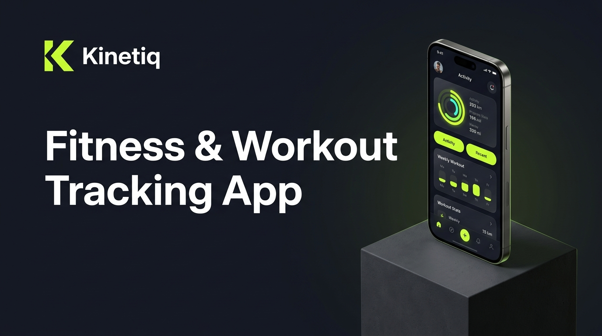
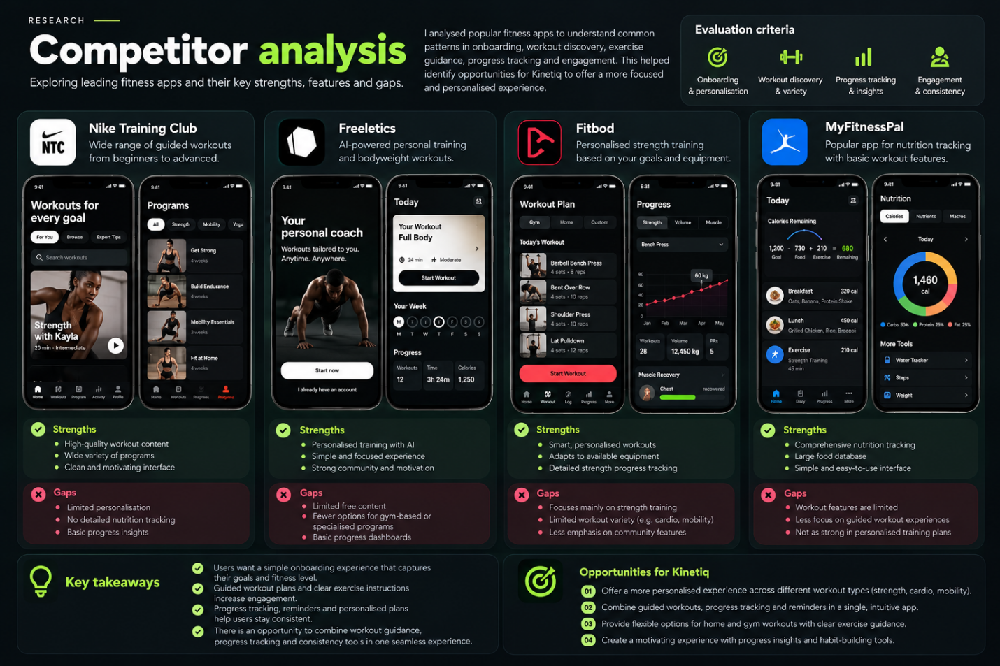
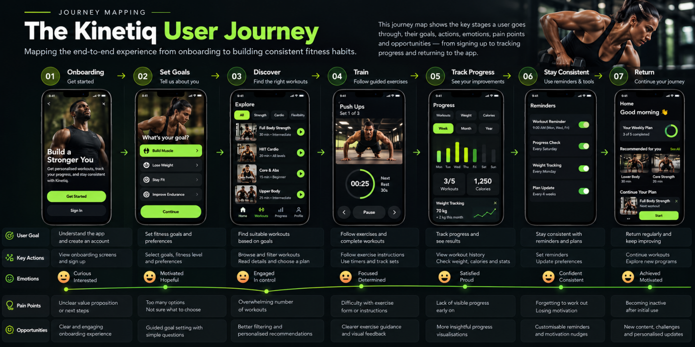
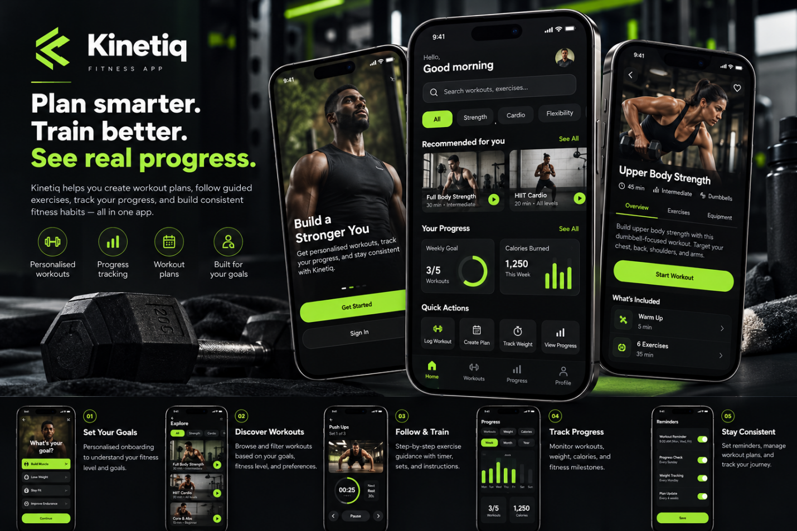

A more personalised way to plan, track, and improve fitness

Kinetiq helps users create workout plans, follow guided exercises, track fitness progress, and build consistent training habits. The designs bring workout discovery, personalised recommendations, exercise guidance, progress tracking, and account management into one mobile experience.
Make fitness planning feel approachable while helping users find suitable workouts, stay consistent, and understand their progress.
Making fitness easier to start and maintain
Many people want to improve their fitness but struggle to find suitable workouts, follow a structured plan, and stay consistent while tracking progress.
Kinetiq brings workout discovery, personalised plans, guided exercises, progress tracking, and reminders into one mobile experience.
Understanding fitness needs and behaviours
I reviewed the supplied designs and mapped the main journey from onboarding to workout completion and progress tracking.
Review common patterns in workout discovery, guidance, and tracking across leading fitness platforms including Nike Training Club, Freeletics, Fitbod, and MyFitnessPal.

Connect goal selection, workout discovery, training, and progress review into one continuous, encouraging experience.

Examine navigation, workout creation, exercise guidance, and tracking flows to eliminate friction points during active workouts.
One connected experience for everyday fitness
Kinetiq connects the core fitness journey through five key experiences:

Reviewing the core user flows
I reviewed the main journeys represented in the designs to assess clarity, consistency, and ease of navigation.
The aim was to identify confusing steps and ensure that key actions and feedback were easy to understand.
This was a design review of the supplied screens. No participant-based usability test results were provided.
A more structured and personalised fitness experience
The final design brings workout planning, guided training, progress tracking, and fitness management into one connected app.
Kinetiq reinforced the importance of designing beyond the workout itself. A useful fitness app should help users plan, train, understand their progress, and return to their routine with confidence.